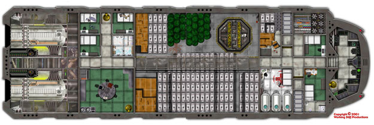

Working Stiff Productions proudly presents Graphic Artist Ron
Shirtz's Large game tile,

The Space Freighter Brandy's Lament!
Two 11" x 17" mapsheets make up this full color and beautifully detailed game tile
of a futuristic space freighter----almost three feet long!
Perfect for 25mm miniatures, it can be used by GMs for any number of Sci-Fi RPGs
such as Star Wars, Space Crusade, and other genres.
Also included is a two page data sheet with suggested rules for GM's to use with Brandy's Lament,
as well as over a dozen story "hooks" to use to start a game aboard this deep space freighter.
So stop playing your miniatures on plain grid paper, and add a new dimension of excitement
to role playing by ordering Brandy's Lament today!
This tile set sells for $13.00, with $5.50 for S & H in the US.
Email Ron Shirtz at egc'at'northnet.org to place your order today!